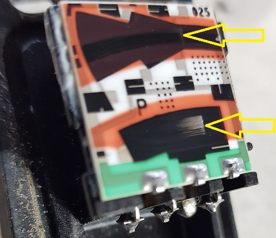

22.03.2019
Большинство владельцев а/м со старой , но очень надёжной системой впрыска топлива KE-Jetronic сталкиваются с проблемой , нестабильная работа двигателя на холостом ходу ( далее "х.х." ) . При этом симптомов бывает несколько : завышенные обороты х.х. , малые обороты х.х. , самопроизвольно плавающие обороты х.х. , пропадание оборотов х.х. ( двигатель глохнет на х.х.) . Мы рассмотрим эту неисправность на примере AUDI 100 C4 мотор AAR . Одна из самых распростанённых причин такой неисправности это износ потенциометра напорного диска расходомера воздуха или Датчика Массового Расхода Воздуха ( ДМРВ ) .
 Дело в том , что при работе двигателя вместе с напорным диском по плате датчика постоянно перемещаются металличесские " ножки " создавая тем самым эфект " плавующего " контакта , что и позволяет изменять напряжение на выходе с датчика. Естественно , такое устройство не долговечно ! И надо отдать должное немецкому производителю т.к. срок службы датчика , из практики , составляет 10-20 лет !!! Но со временем плата датчика протирается , что ведёт к пропаданию сигнала из датчика ... Соответственно ЭБУ двигателя ориентируясь на неправильный сигнал из датчика даёт неправильный сигнал на Регулятор оборотов Холостого Хода ( РХХ ).
Дело в том , что при работе двигателя вместе с напорным диском по плате датчика постоянно перемещаются металличесские " ножки " создавая тем самым эфект " плавующего " контакта , что и позволяет изменять напряжение на выходе с датчика. Естественно , такое устройство не долговечно ! И надо отдать должное немецкому производителю т.к. срок службы датчика , из практики , составляет 10-20 лет !!! Но со временем плата датчика протирается , что ведёт к пропаданию сигнала из датчика ... Соответственно ЭБУ двигателя ориентируясь на неправильный сигнал из датчика даёт неправильный сигнал на Регулятор оборотов Холостого Хода ( РХХ ).
В итоге владелец а/м сталкивается с выше указанными симптомами ...

ИЗНОС ПОТЕНЦИОМЕТРА
Всё выглядило бы очень печально , ведь данный потенциометр снят с производства , а если и есть в продаже , то стоит не адекватно дорого .Китайский аналог есть , но у него не правильная осцилограмма на выходе и поэтому он не подлежит регулировке. Единственно надёжный вариант , который проверен годами - это датчик виннерса (ссылка).